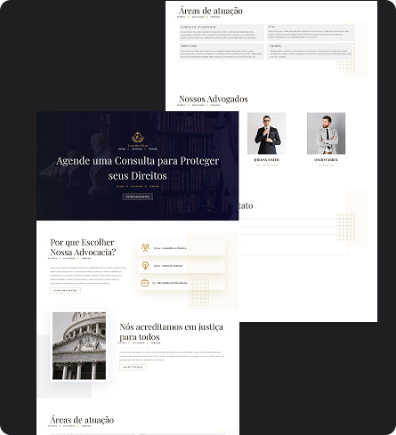
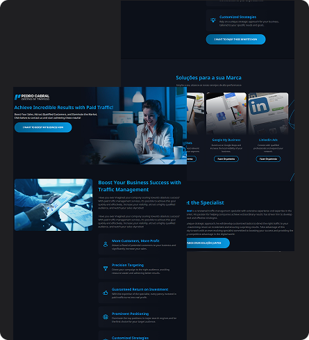

Especialista em criar experiências robustas, escaláveis e visualmente impactantes. Foco em performance, usabilidade e código limpo.
Desenvolvedora apaixonada por tecnologia e inovação, com sólida experiência em construção de aplicações modernas.
Sou desenvolvedora de software com mais de 3 anos de experiência, especializada em desenvolvimento mobile com Flutter e gestão de bancos de dados. Atuo em todas as etapas do ciclo de desenvolvimento, desde o levantamento de requisitos até a entrega final, aplicando metodologias ágeis e boas práticas como TDD e Clean Architecture.
Atualmente trabalho na Sudoeste Informática, onde participo de projetos governamentais de grande impacto, colaborando com equipes multidisciplinares para entregar soluções robustas e escaláveis. Além da parte técnica, invisto constantemente em desenvolvimento pessoal, com certificações em comunicação, liderança e metodologias ágeis.
Baixar CurrículoHtml, Css e javaScript
Firebase, Supabase
PostgreSQL, Oracle, SQLServer
Flutter
Uma trajetória focada em aprendizado contínuo e entrega de valor através da tecnologia.
Dart · Flutter · Versionamento de código (Git) · Modular · Testes Unitários · S.O.L.I.D · Bloc · Kanban · Consumo de APIs REST/JSON · Supabase
Dart · Flutter · Versionamento de código (Git) · Modular · Testes Unitários · S.O.L.I.D · Bloc · Kanban · Consumo de APIs REST/JSON · Supabase
Participação em todas as etapas do desenvolvimento de software: levantamento de requisitos, design, codificação, testes (TDD, testes unitários e de integração) e manutenção. Documentação técnica detalhada e transformação de requisitos de negócio em especificações técnicas e user stories. Correção de bugs, melhoria contínua de sistemas e suporte à experiência do usuário. Controle de versão e colaboração em metodologias ágeis (Scrum e Kanban). Gestão e otimização de bancos de dados (Oracle, SQL Server, Postgres) com foco em performance e estruturação de dados. Colaboração com equipes de QA e resolução de problemas relatados para garantir estabilidade e desempenho. Comunicação eficiente com stakeholders, apresentando resultados e soluções implementadas.
Uma seleção de trabalhos que demonstram minhas capacidades técnicas e resolução de problemas.
Sistema de gestão funcional dos servidores públicos da SEFAZ, abrangendo frequência, férias, cadastro funcional e processos administrativos de RH.
Desenvolvimento de um sistema de Gerenciamento do Plano Estratégico para a Secretaria de Sustentabilidade, Resiliência, Bem-estar e Proteção Animal (SECIS) da Prefeitura Municipal de Salvador (PMS), responsável por facilitar a gestão e acompanhamento das ações e metas definidas no plano estratégico da secretaria. Este sistema contribui para a promoção do desenvolvimento sustentável, estudos e planos para a preservação ambiental e dos recursos naturais, bem como para a formulação e implementação da Estratégia de Resiliência da cidade.
Atuação focada na tradução de requisitos em histórias de usuário claras, completas e priorizadas, facilitando o alinhamento entre as necessidades do negócio e o time de tecnologia. Colaboração próxima com desenvolvedores para garantir entendimento e viabilidade técnica das soluções propostas.
Participação no desenvolvimento de um aplicativo mobile utilizando Flutter, implementando interfaces a partir dos layouts da equipe de design com foco em UX de alta qualidade (pixel perfect). Atuação na definição de tecnologias do projeto, gestão de versionamento com Git, organização do backlog, revisão de tarefas e colaboração com a equipe de UI/UX, além de apoio no recrutamento e entrevistas de novos membros da equipe.

Desenvolvimento de um site institucional moderno para um escritório de advocacia, com foco em apresentação profissional dos serviços, áreas de atuação e equipe de advogados. O projeto foi estruturado para oferecer navegação clara, design elegante e boa experiência do usuário, destacando informações importantes como agendamento de consultas, especialidades jurídicas e apresentação dos profissionais do escritório. O layout foi desenvolvido priorizando organização visual, responsividade e credibilidade da marca no ambiente digital.

Desenvolvimento de uma landing page moderna para serviços de marketing digital, focada na apresentação de soluções estratégicas para crescimento de marcas. O projeto destaca serviços como gestão de tráfego pago, Google Ads, LinkedIn Ads e estratégias personalizadas, utilizando um design visual forte, seções bem estruturadas e chamadas para ação que incentivam o contato e a conversão de clientes. A interface foi construída priorizando clareza na comunicação, experiência do usuário e responsividade
Estou sempre aberto a novas oportunidades e desafios. Entre em contato para discutirmos seu próximo projeto.
Salvador, Brasil (Remoto)